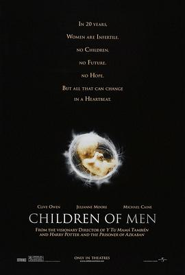

人类之子 / Children of Men
又名：末代浩劫(港) / 绝种浩劫 / 硕果仅存
设定很新奇，当然也很架空，末日里有值得信任的朋友真是幸福，在一个没有孩童声的世界里，有娃也是幸福
作品信息
| 导演 | 阿方索·卡隆 |
| 编剧 | 阿方索·卡隆 / 蒂莫西·J·塞克斯顿 / 大卫·阿莱塔 / 马克·弗格斯 / 霍克·奥斯比 / P·D·詹姆斯 |
| 主演 | 克里夫·欧文 / 朱丽安·摩尔 / 迈克尔·凯恩 / 丽塔·戴维斯 / 迈克尔·豪伊 / 法尔杜特·夏尔马 / 查理·汉纳姆 / Juan Gabriel Yacuzzi / Mishal Husain / Rob Curling / Jon Chevalier / Kim Fenton / Chris Gilbert / Phoebe Hawthorne / Rebecca Howard / Atalanta White / Laurence Woodbridge / Maria McErlane / 米里亚姆·卡琳 / Philippa Urquhart / 泰米娜·森尼 |
| 类型 | 剧情 / 动作 / 科幻 / 惊悚 |
| 制片国家/地区 | 美国 / 英国 / 日本 / 墨西哥 |
| 语言 | 英语 / 德语 / 意大利语 / 罗马尼亚语 / 西班牙语 / 阿拉伯语 / 格鲁吉亚语 / 俄语 / 塞尔维亚语 |
| 上映日期 | 2006-09-03(威尼斯电影节) / 2006-09-22(英国) |
| 片长 | 109分钟 |
| IMDb | tt0206634 |
说过什么
2025-07-08 22:00:55
看过 · 时间来自广播，短评来自标记页
设定很新奇，当然也很架空，末日里有值得信任的朋友真是幸福，在一个没有孩童声的世界里，有娃也是幸福
最后一次看到是 2026-08-01T11:04:04+10:00 · 豆瓣原页